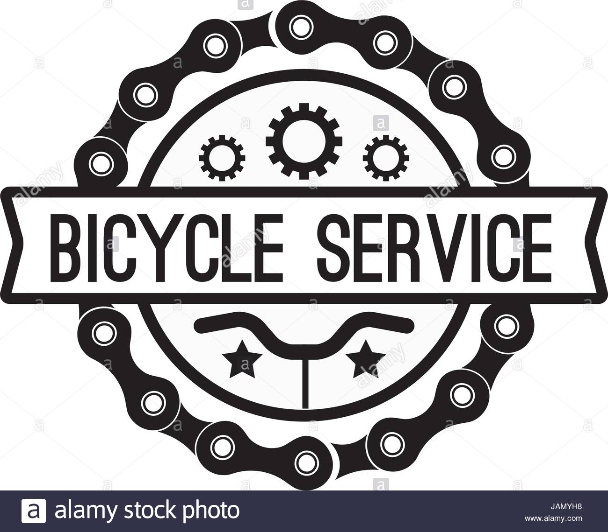

|  |
- The mission of Bike Service Center is to serve its customers to the fullest. Bike Service Center is the online based entity that is aimed at organizing the quite unorganized after sales market for its users so that customers can have all relevant details before making an informed decision based on their requirements.
- We provide various package for service which has been meticulously curtained to meet us requirements. For Bikes we are there for you always, we provide complete transparency to customers and satisfy their needs, provide an opportunity to serve you and we guarantee that you will not be disappointed because customer satisfaction is the first and foremost thing that we aim for, Be it night or day we will be buy your side Always. So what are you waiting for Register in the Bike Service Center for your Bike.